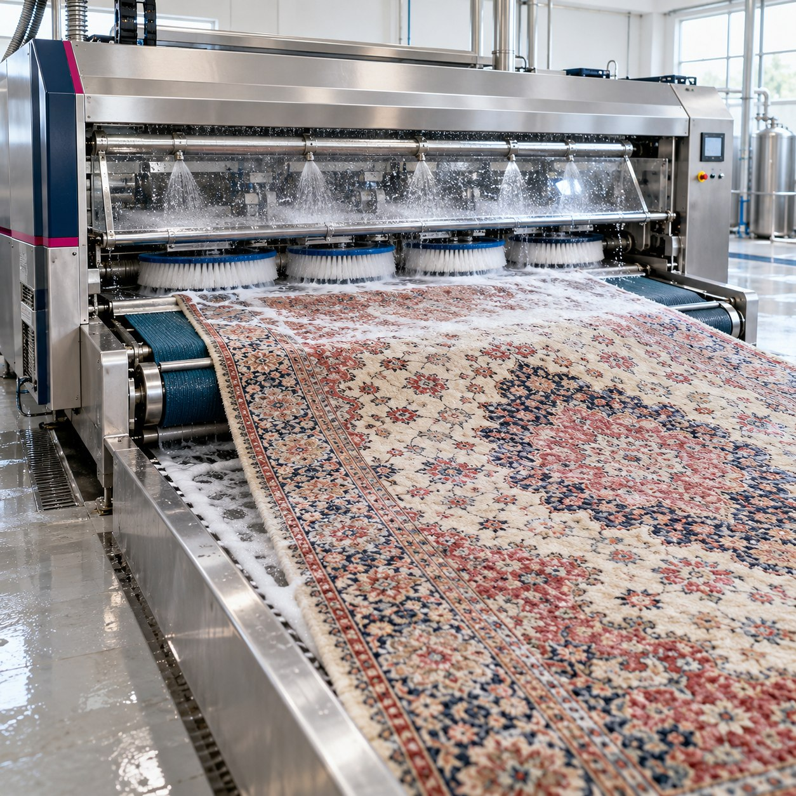
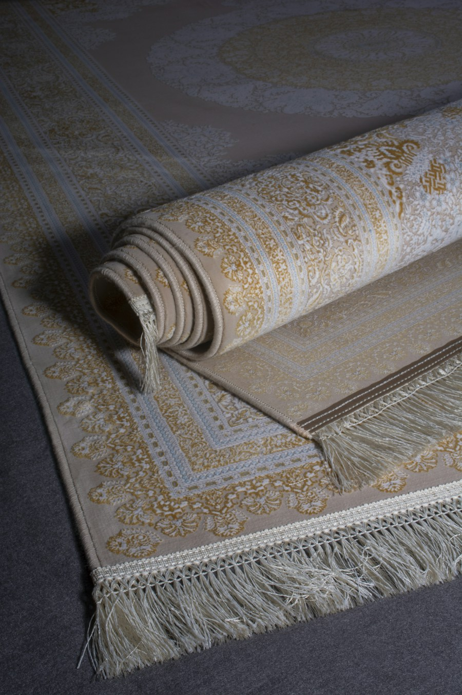
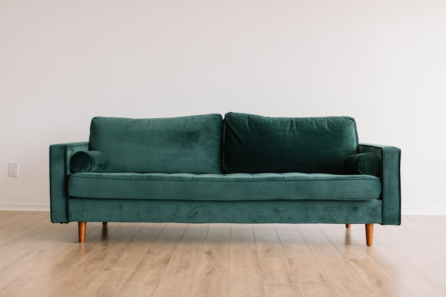
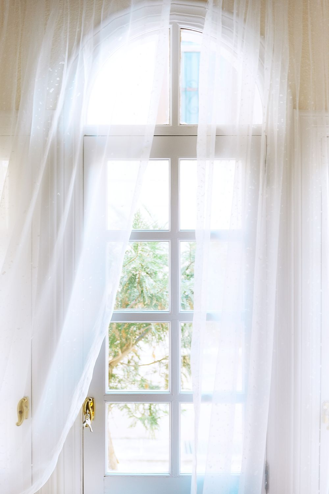

Bize ulaşın
Arayın veya WhatsApp’tan yazın. Ürününüzü ve ihtiyacınızı birlikte tanıyalım.
Konya’da halılarınıza, dokusuna uygun özenli temizlik. Halı yıkama başta olmak üzere koltuk, yatak, yorgan ve perde temizliğinde yanınızdayız.

Farklı dokular, farklı ihtiyaçlar.
Aradığınız hizmeti yakından tanıyın.

01Halılarınızın türüne ve dokusuna uygun temizlik ve özenli bakım.
Hizmeti keşfedin
02Koltuk ve oturma alanlarınız için kumaş yapısını dikkate alan temizlik.
Hizmeti keşfedin 03
03Yorgan ve battaniyeleriniz için dolgu ve kumaş türüne uygun bakım.
Hizmeti keşfedin
04Tül, perde ve storlarınızın malzeme ve mekanizma özelliklerine uygun bakım.
Hizmeti keşfedin 05
05Yatağınızın yüzeyi ve kumaş yapısı için özenle planlanan temizlik.
Hizmeti keşfedinMakine halısı, yün halı, hassas dokular… Her halının yapısı ve bakım ihtiyacı farklıdır. Halı yıkamaya, ürününüzün dokusunu ve temizlik ihtiyacını tanıyarak başlıyoruz.
Gülsen Halı Yıkama olarak Konya’da halı, koltuk, yorgan, battaniye, perde ve yatak temizliği için yanınızdayız. İhtiyacınızı dinliyor, hizmet detaylarını sizinle birlikte netleştiriyoruz.
İlk görüşmeden teslimata kadar
ihtiyacınıza göre ilerleyen bir süreç.
Arayın veya WhatsApp’tan yazın. Ürününüzü ve ihtiyacınızı birlikte tanıyalım.
Hizmet kapsamını, fiyat bilgisini ve adresinize uygun randevuyu görüşelim.
Ürünün türünü ve bakım gereksinimlerini dikkate alarak süreci planlayalım.
Teslim ve kullanım öncesi dikkat edilecek noktaları öğrenin.
Hizmetlerimizle ilgili kısa yanıtlar.
Size özel detaylar için bize yazın.
Telefonla arayabilir veya WhatsApp üzerinden ürününüzün türünü, ölçüsünü ve fotoğrafını paylaşabilirsiniz. Fiyat, ürünün özellikleri ve talep edilen hizmetin kapsamına göre belirlenir.
Mahalle ve ilçe bilginizi paylaşarak adresiniz için hizmet ve servis uygunluğunu öğrenebilirsiniz. Randevu planını görüşme sırasında birlikte netleştiriyoruz.
Teslim ve işlem süresi; ürün türüne, bakım ihtiyacına, kuruma koşullarına ve randevu yoğunluğuna göre değişir. Güncel süreyi sipariş öncesinde bize sorabilirsiniz.
Lekenin fotoğrafını, ne zaman oluştuğunu ve daha önce uyguladığınız işlemleri paylaşın. Her leke ve kumaş farklıdır; kesin sonuç sözü yerine ürüne özel değerlendirme yapılır.
Talep ettiğiniz hizmeti, ürün adedini veya ölçüsünü ve bulunduğunuz mahalleyi iletmeniz yeterli. Gerekli diğer ayrıntıları iletişim sırasında birlikte tamamlayabiliriz.
İhtiyacınızı paylaşın, hizmet ve fiyat bilgisi için birlikte konuşalım.
Hizmet detayları, fiyat bilgisi ve randevu için bize ulaşın. Adresinize uygun hizmet planını birlikte oluşturalım.
0 506 679 24 71 Yol tarifi alın